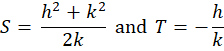

Implementation details for a 2D alpha shape utility
Part 3: The alpha circle calculation
Introduction
Part 1 of these notes introduced the concepts underlying a 2D alpha shape utility. Part 2 discussed implementation details from the AlphaShape class. This section of the notes provides the derivation for the alpha circle calculations which are used extensively within the AlphaShape class.
The process of building an alpha shape from a Delaunay triangulation is based on determining which edges in the triangulation are to be included in the shape and which are external to its bounds (i.e. which edges are "exposed"). The choice of which edges are exposed is based on the alpha circle selection criterion
The alpha circle calculation
The key calculation needed to construct an alpha circle is to find the centers for two circles of radius r that intersect a line segment of length 2r or less. This calculation can be accomplished using basic algebra, though a software implementation needs to make a few adjustments to compensate for the limits of float-point arithmetic. In particular, when processing geospatial data, we are often faced with coordinates that are separated by small distances but have a large magnitude. And, under some circumstances, calculations with large-magnitude values suffer a loss of precision when low-order digits drop out of addition or subtraction operations. So the calculation below uses a simple offsetting transformation to reduce the magnitude of the values the software needs to process in a numerical calculation.
Given a line segment
with distinct endpoints
 and ,
we wish to find the coordinates for the centers of two alpha circles
and ,
we wish to find the coordinates for the centers of two alpha circles
 and
.
and
.
Let
 |
This specification essentially transforms the endpoints of
the segment to a new coordinate system in which they are defined as
and  .
From the definition of a circle, we obtain the relationships shown
below in [1]. While these equations superficially resemble the
standard equations for a circle, they are actually intended to
allow us to find the centers of the circles.
Those centers are found by solving the equations for x and y.
As we would expect, the equations lead to two solutions,
one for each circle.
.
From the definition of a circle, we obtain the relationships shown
below in [1]. While these equations superficially resemble the
standard equations for a circle, they are actually intended to
allow us to find the centers of the circles.
Those centers are found by solving the equations for x and y.
As we would expect, the equations lead to two solutions,
one for each circle.
Once we find the pair solutions for (x, y),
we can transform the results back to the original
coordinate system by adding back the offset for
 .
.
| [1] |
 |
Solving the two simultaneous equations in [1] for y as a function of x, we have
 |
[2] |
assuming that k is not zero.
Let
| [3] |
with
|  |
Substituting [3] into [1], we have
and
 |
[4] |
Solving the quadratic equation [4] gives us two values for x corresponding to the centers of the two circles:
 |
Designating the values of x as x0 and x1, compute y0 and y1 using [2]. Then for each coordinate pair, we have circle centers
Special cases exist when the line segment is of length 2r (the quadratic has a single solution), length greater than 2r (the quadratic has no solution), and the line segment is of zero length (the two endpoints are not distinct and an alternate, trivial solution applies).
In the equations above, we assume that the value for k is not zero and allow it to appear in the denominator for some of the equations. If k is zero, then the y coordinates of the line segment would be equal and there is a simpler calculation that we could use for the circle centers. But doing so would not address the floating-point arithmetic issues that would arise when k was non-zero but had a very small absolute value. To avoid putting near-zero values in the denominator, Tinfour uses an alternate derivation of the calculation for circle centers. When it puts h in the denominator rather than k by solving the simultaneous equations in [1] to get x as a function of y.
| [5] |
This expression closely resembles expression [2] which gave us y as a function of x. The rest of the alpha-circle calculation follows in a manner similar to the steps above: solve the quadratic equation for y and compute the two values x0 and x1 from y0 and y1.
In Tinfour's AlphaCircle class, there are two blocks of code for computing the circle centers. One puts h in the denominator, and one that puts k in the denominator, depending on which of the variables has the largest absolute value. While there is some redundancy in the code, this approach neatly avoid numeric problems when either h or k are nearly zero.